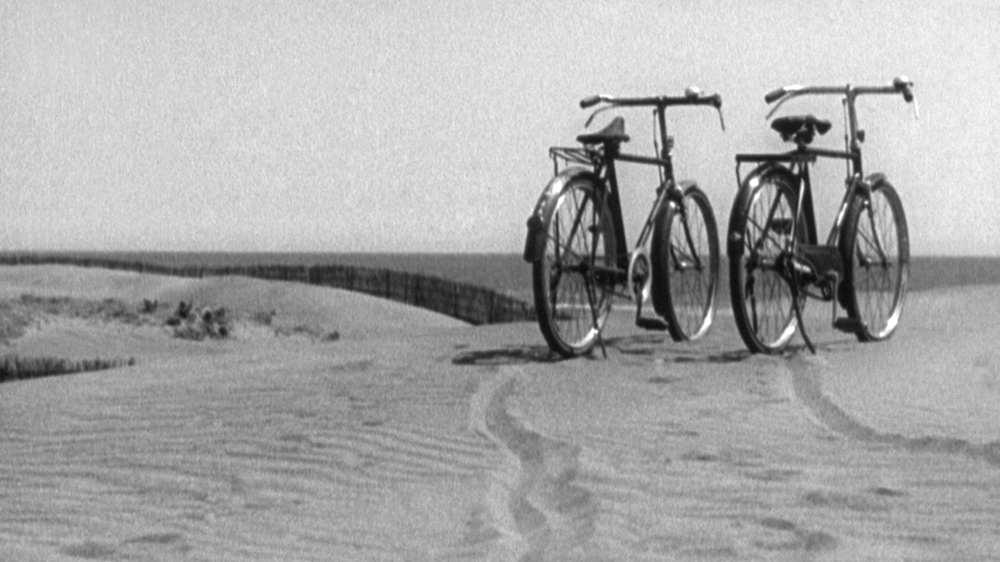
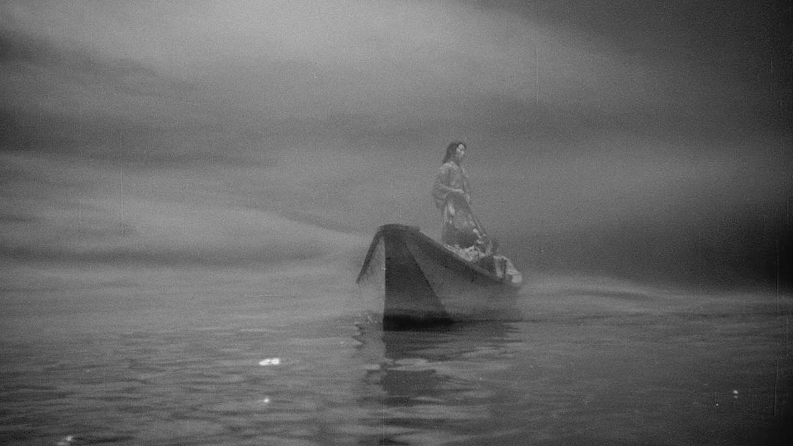

Home
Introduction
Unit 1
Unit 2
Unit 3
Caveat
Japanese Film as a Critique of Western Realist Cinema
A text & graphics reading of Noel Burch's
To the Distant Observer
.

Japanese Film as a Critique of Western Realist Cinema
A text & graphics reading of Noel Burch's
To the Distant Observer
.

Japanese Film as a Critique of Western Realist Cinema
A text & graphics reading of Noel Burch's
To the Distant Observer
.
Previous
Next
EALC Department